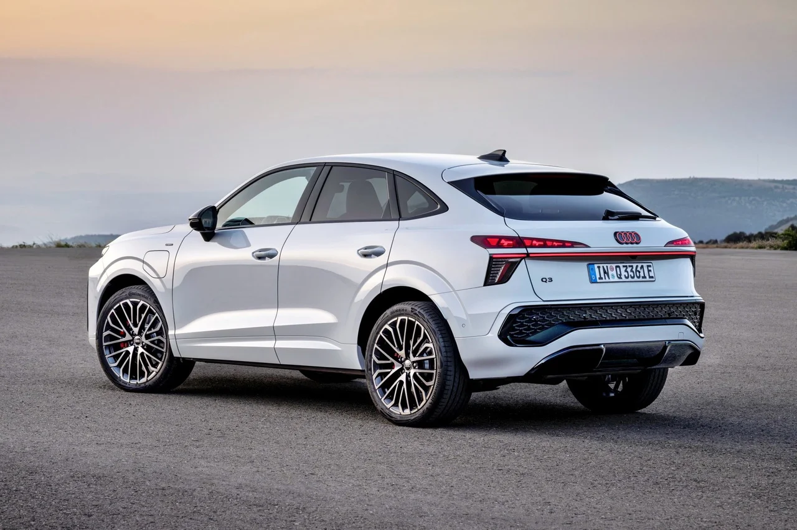

SPORTİF VE ESTETİK DURUŞ
Audi Q3 Sportback, SUV'un gücünü bir coupe'nin estetiğiyle birleştiriyor. Keskin hatları ve alçalan tavan çizgisi, aracın dinamik karakterini ilk bakışta ortaya koyuyor.
- ✓ S-Line Dış Tasarım Paketi
- ✓ Matrix LED Farlar ve Dinamik Sinyaller
- ✓ 19 inç 5 Kol Tasarımlı Jantlar

DİJİTAL VE KONFORLU KABİN
İç mekan, Audi'nin yüksek teknoloji anlayışını yansıtıyor. Virtual Cockpit ve MMI dokunmatik ekran, sürücüye her an kusursuz bir kontrol imkanı sağlıyor.
- ✓ Audi Virtual Cockpit Plus
- ✓ Ambiyans Aydınlatma Paketi Plus
- ✓ Panoramik Cam Tavan
TEKNİK MÜHENDİSLİK
0-100 KM/H
9.5sn
GÜÇ
150hp
MAKSİMUM TORK
250nm
MOTOR HACMİ
1.498cc
MAKSİMUM HIZ
207km/h
ŞANZIMAN
S-tronic7-ileri
ÇEKİŞ SİSTEMİ
FWDönden çekiş
YAKIT TÜKETİMİ
6.7L/100km
BOŞ AĞIRLIK
1.530kg
SİLİNDİR
4sıralı
BAGAJ HACMİ
530L
YAKIT TİPİ
Benzin35 TFSI